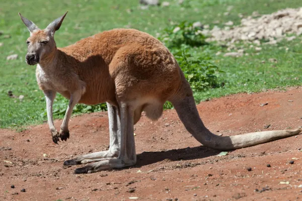
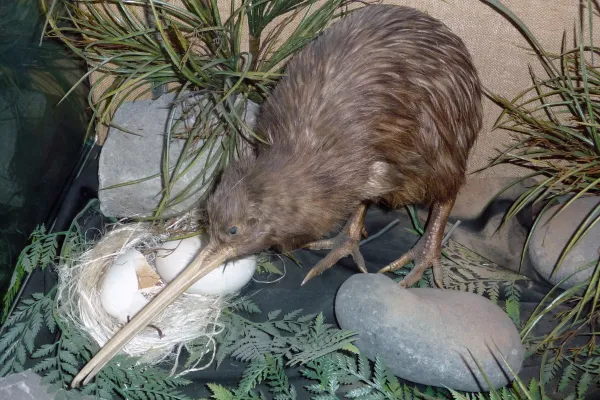
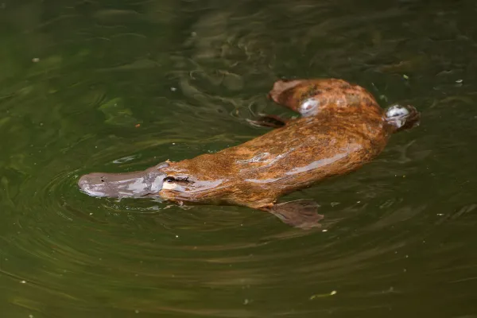

El canguro rojo (Macropus rufus) es el mamífero terrestre más grande de Australia y uno de los marsupiales más grandes del mundo. Puede alcanzar 1,8 metros de alto, mientras que su cola puede medir hasta 1,2 metros de longitud. Su postura es bípeda y utiliza su cola como un tercer punto de apoyo. Son animales extremadamente veloces y ágiles, capaces de realizar saltos de hasta 3 metros de altura y 10 metros de longitud.
Los kiwis son aves no voladoras que pertenecen al género Apteryx, compuesto por cinco especies endémicas de Nueva Zelanda. Son aves tímidas, nocturnas, del tamaño de una gallina, que poseen un espectacular sentido del olfato. Prefieren bosques densos aunque pueden habitar también en matorrales y plantaciones de pinos.
El ornitorrinco (Ornithorhynchus anatinus) es un mamífero semiacuático que pone huevos. Las hembras no poseen tetillas, pezones ni mamas, sino que la leche es liberada a través de la piel y es lamida por sus crías. Estos característicos animales que poseen su hocico en forma de pico, cola similar a la de un castor, patas con membranas interdigitales y espolones venenosos, solo se encuentran en el este de Australia y en la isla de Tasmania.
